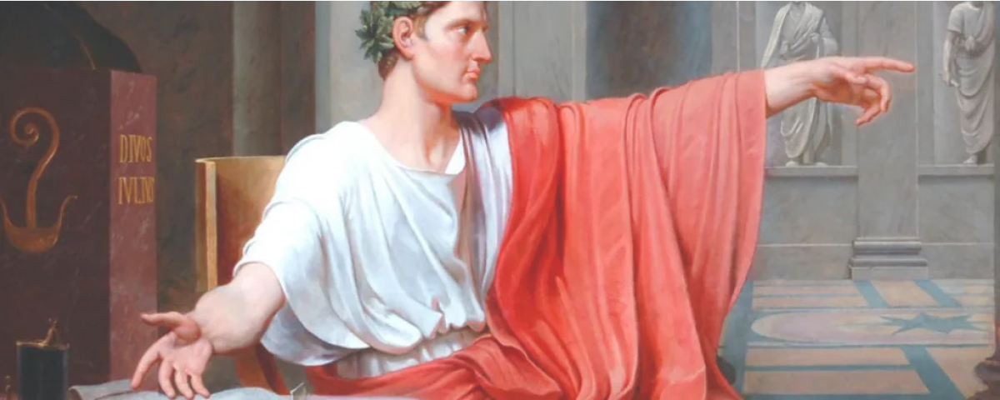

I Stom tijdverdrijf
C. Caecilius Plinius Minor, Epistulae 9, 6 · wagenrennen, rust en vrije tijd
Context
Plinius over de spelen
Plinius schrijft aan zijn vriend Calvisius over een merkwaardig fenomeen in Rome: rust. Terwijl de stad in de ban is van de wagenrennen, brengt hij zijn tijd liever door met schrijftabletten en boekjes. De brief contrasteert de massale passie voor de kleuren van de renstallen met Plinius' eigen keuze voor studie, literatuur en otium.
C. PLINIUS CALVISIO SUO S.
(§1) Omne hoc tempus inter pugillares ac libellos iucundissima quiete transmisi. "Quemadmodum", inquis, "in urbe potuisti?" Circenses erant, quo genere spectaculi ne levissime quidem teneor. Nihil novum nihil varium, nihil quod non semel spectasse sufficiat.
(§2) Quo magis miror tot milia virorum tam pueriliter identidem cupere currentes equos, insistentes curribus homines videre.
Si tamen aut velocitate equorum aut hominum arte traherentur, esset ratio non nulla; nunc favent panno,
pannum amant, et si in ipso cursu medioque certamine hic color illuc ille huc transferatur, studium
favorque transibit, et repente agitatores illos equos illos, quos procul noscitant, quorum clamitant nomina
relinquent. (§3) Tanta gratia tanta auctoritas in una vilissima tunica, mitto apud vulgus, quod vilius tunica,
sed apud quosdam graves homines, quos ego cum recordor in re inani frigida assidua, tam insatiabiliter
desidere, capio aliquam voluptatem, quod hac voluptate non capior.
(§4) Ac per hos dies libentissime otium meum in litteris colloco, quos alii otiosissimis occupationibus perdunt.
Vale.
1C. PLINIUS CALVISIO SUO S.
2(§1) Omne hoc tempus inter pugillares ac libellos iucundissima quiete transmisi. "Quemadmodum",
3inquis, "in urbe potuisti?" Circenses erant, quo genere spectaculi ne levissime quidem teneor.
4Nihil novum nihil varium, nihil quod non semel spectasse sufficiat. (§2) Quo magis miror tot milia
5virorum tam pueriliter identidem cupere currentes equos, insistentes curribus homines videre.
6Si tamen aut velocitate equorum aut hominum arte traherentur, esset ratio non nulla; nunc favent panno,
7pannum amant, et si in ipso cursu medioque certamine hic color illuc ille huc transferatur, studium
8favorque transibit, et repente agitatores illos equos illos, quos procul noscitant, quorum clamitant nomina
9relinquent. (§3) Tanta gratia tanta auctoritas in una vilissima tunica, mitto apud vulgus, quod vilius tunica,
10sed apud quosdam graves homines, quos ego cum recordor in re inani frigida assidua, tam insatiabiliter
11desidere, capio aliquam voluptatem, quod hac voluptate non capior. (§4) Ac per hos dies libentissime
12otium meum in litteris colloco, quos alii otiosissimis occupationibus perdunt.
13Vale.
Grammaticale noten
1quo genere spectaculi — ablativus respectus: "wat dat soort schouwspel betreft".
2ne levissime quidem teneor — ne ... quidem: "zelfs niet"; teneor passief: "ik word geboeid".
3quod non semel spectasse sufficiat — rel. bijzin met conjunctief: "waarvan het zou volstaan het één keer gezien te hebben".
4si ... traherentur, esset ratio non nulla — irrealis: "als ze meegesleept werden, dan zou er enige reden zijn".
5quos ego cum recordor ... desidere — quos verwijst naar graves homines; desidere infinitief bij recordor.
Tekst 1 · Thema 3 · 3de jaar